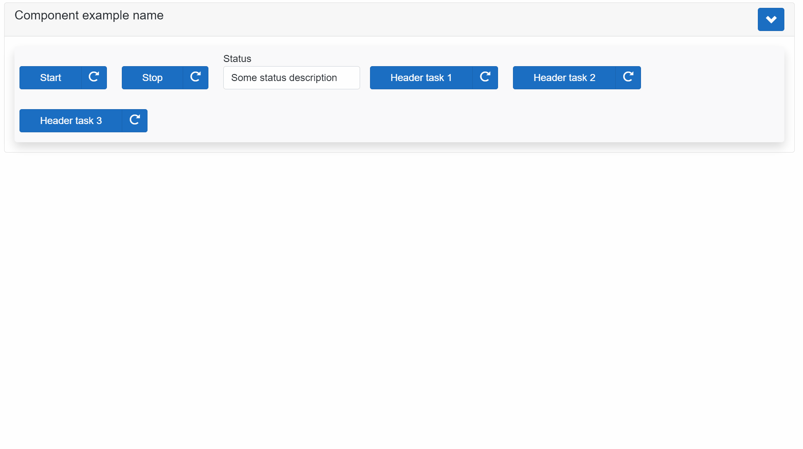

AXOpen.Core
AXOpen.Core provides basic blocks for building AXOpen applications.
Basic concepts
AxoContext
AxoContext encapsulates entire application or application units. Any solution may contain one or more contexts, however the each should be considered to be an isolated island and any direct inter-context access to members must be avoided.
Note
Each AxoContext must belong to a single PLC task.Multiple AxoContexts can be however running on the same task.
classDiagram
class Context{
+Main()*
+Run()
}
In its basic implementation AxoContext has relatively simple interface. Main is the method where we place all calls of our sub-routines. In other words the Run is the root of the call tree of our program.
Run method runs the AxoContext. It must be called cyclically within a program unit that is attached to a cyclic task.
Why do we need AxoContext
AxoContext provides counters, object identification and other information about the execution of the program. These information is then used by the objects contained at different levels of the AxoContext.
How AxoContext works
When you call Run method on an instance of a AxoContext, it will ensure opening AxoContext, running Main method (root of all your program calls) and AxoContext closing.
flowchart LR
classDef run fill:#80FF00,stroke:#0080FF,stroke-width:4px,color:#7F00FF,font-size:15px,font-weight:bold
classDef main fill:#ff8000,stroke:#0080ff,stroke-width:4px,color:#7F00FF,font-size:15px,font-weight:bold
id1(Open):::run-->id2(#Main*):::main-->id3(Close):::run-->id1
How to use AxoContext
Base class for the AxoContext is AXOpen.Core.AxoContext. The entry point of call execution of the AxoContext is Main method. Notice that the AxoContext class is abstract and cannot be instantiated if not extended. Main method must be overridden in derived class notice the use of override keyword and also that the method is protected which means the it is visible only from within the AxoContext and derived classes.
How to extend AxoContext class
CLASS PUBLIC AxoContextExample EXTENDS AXOpen.Core.AxoContext
METHOD PROTECTED OVERRIDE Main
// Here goes all your logic for given AxoContext.
;
END_METHOD
END_CLASS
Cyclical call of the AxoContext logic (Main method) is ensured when AxoContext Run method is called. Run method is public therefore accessible and visible to any part of the program that whishes to call it.
How to start AxoContext's execution
PROGRAM ProgramExample
VAR
MyContext : AxoContextExample;
END_VAR
MyContext.Run();
END_PROGRAM
AxoObject
AxoObject is the base class for any other classes of AXOpen.Core. It provides access to the parent AxoObject and the AxoContext in which it was initialized.
classDiagram
class Object{
+Initialize(IAxoContext context)
+Initialize(IAxoObject parent)
}
AxoObject initialization within a AxoContext
CLASS PUBLIC MyContext EXTENDS AXOpen.Core.AxoContext
VAR
_myObject : AxoObject;
END_VAR
METHOD PROTECTED OVERRIDE Main
_myObject.Initialize(THIS);
END_METHOD
END_CLASS
AxoObject initialization within another AxoObject
CLASS PUBLIC MyParentObject EXTENDS AxoContext
VAR
_myChildObject : AxoObject;
END_VAR
METHOD PROTECTED OVERRIDE Main
_myChildObject.Initialize(THIS);
END_METHOD
END_CLASS
AxoTask
AxoTask provides basic task execution. AxoTask needs to be initialized to set the proper AxoContext.
AxoTask initialization within a AxoContext
CLASS AxoTaskDocuExample EXTENDS AXOpen.Core.AxoContext
VAR PUBLIC
_myTask : AxoTask;
_myCounter : ULINT;
END_VAR
METHOD PUBLIC Initialize
// Initialization of the context needs to be called first
// It does not need to be called cyclically, just once
_myTask.Initialize(THIS);
END_METHOD
END_CLASS
There are two key methods for managing the AxoTask:
Invoke()fires the execution of the AxoTask (can be called fire&forget or cyclically)Execute()method must be called cyclically. The method returnsTRUEwhen the AxoTask is required to run until entersDonestate or terminates in error.
For termination of the execution of the AxoTask there are following methods:
DoneWhen(Done_Condition)- terminates the execution of the AxoTask and enters theDonestate when theDone_ConditionisTRUE.ThrowWhen(Error_Condition)- terminates the execution of the AxoTask and enters theErrorstate when theError_ConditionisTRUE.Abort()- terminates the execution of the AxoTask and enters theReadystate if the AxoTask is in theBusystate, otherwise does nothing.
To reset the AxoTask from any state in any moment there is following method:
Restore()acts as reset of the AxoTask (sets the state intoReadystate from any state of the AxoTask).
Moreover, there are seven more "event-like" methods that are called when a specific event occurs (see the chart below).
flowchart TD
classDef states fill:#80FF00,stroke:#0080FF,stroke-width:4px,color:#7F00FF,font-size:15px,font-weight:bold
classDef actions fill:#ff8000,stroke:#0080ff,stroke-width:4px,color:#7F00FF,font-size:15px,font-weight:bold
classDef events fill:#80FF00,stroke:#0080ff,stroke-width:4px,color:#7F00FF,font-size:15px,font-weight:bold
s1((Ready)):::states
s2((Kicking)):::states
s3((Busy)):::states
s4((Done)):::states
s5((Error)):::states
s6((Aborted)):::states
a1("Invoke()#128258;"):::actions
a2("Execute()#128260;"):::actions
a3("DoneWhen(TRUE)#128258;"):::actions
a4("ThrowWhen(TRUE)#128258;"):::actions
a5("NOT Invoke() call for at<br>least two Context cycles#128260;"):::actions
a6("Restore()#128258;"):::actions
a7("Abort()#128258;"):::actions
a8("Resume()#128258;"):::actions
e1{{"OnStart()#128258;"}}:::events
e2{{"OnError()#128258;"}}:::events
e3{{"WhileError()#128260;"}}:::events
e4{{"OnDone()#128258;"}}:::events
e5{{"OnAbort()#128258;"}}:::events
e6{{"OnRestore()#128258;"}}:::events
subgraph legend[" "]
direction LR
s((State)):::states
ac("Action #128260;:called<br>cyclically"):::actions
as("Action #128258;:single<br>or cyclical call "):::actions
ec{{"Event #128260;:called<br>cyclically"}}:::events
es{{"Event #128258;:triggered<br>once "}}:::events
end
subgraph chart[" "]
direction TB
s1
s1-->a1
a1-->s2
s2-->a2
s3-->a3
s3-->a7
a7-->e5
a7-->s6
s6-->a8
a8-->s3
a3-->s4
s4---->a5
a5-->a1
a2--->s3
s3--->a4
a4-->s5
s5-->a6
a6-->e6
a2-->e1
a4-->e2
a4-->e3
a3-->e4
a6-->s1
end
Example of using AxoTask:
CLASS AxoTaskDocuExample EXTENDS AXOpen.Core.AxoContext
VAR PUBLIC
_myTask : AxoTask;
_myCounter : ULINT;
END_VAR
METHOD PUBLIC Initialize
// Initialization of the context needs to be called first
// It does not need to be called cyclically, just once
_myTask.Initialize(THIS);
END_METHOD
METHOD PROTECTED OVERRIDE Main
// Cyclicall call of the Execute
IF _myTask.Execute() THEN
_myCounter := _myCounter + ULINT#1;
_myTask.DoneWhen(_myCounter = ULINT#100);
END_IF;
END_METHOD
END_CLASS
The AxoTask executes upon the Invoke method call. Invoke fires the execution of Execute logic upon the first call, and it does not need cyclical calling.
_myTask.Invoke();
Invoke() method returns IAxoTaskState with the following members:
IsBusyindicates the execution started and is running.IsDoneindicates the execution completed with success.HasErrorindicates the execution terminated with a failure.IsAbortedindicates that the execution of the AxoTask has been aborted. It should continue by calling the methodResume().
Examples of using: Invoking the AxoTask and waiting for its completion at the same place.
IF _myTask.Invoke().IsDone() THEN
; //Do something
END_IF;
Invoking the AxoTask and waiting for its completion at the different places.
_myTask.Invoke();
IF _myTask.IsDone() THEN
; //Do something
END_IF;
Checking if the AxoTask is executing.
IF _myTask.Invoke().IsBusy() THEN
; //Do something
END_IF;
Check for the AxoTask's error state.
IF _myTask.Invoke().HasError() THEN
; //Do something
END_IF;
The AxoTask can be started only from the Ready state by calling the Invoke() method in the same Context cycle as the Execute() method is called, regardless the order of the methods calls. After AxoTask completion, the state of the AxoTask will remain in Done, unless:
1.) AxoTask's Restore method is called (AxoTask changes it's state to Ready state).
2.) Invoke method is not called for two or more consecutive cycles of its context (that usually means the same as PLC cycle); successive call of Invoke will switch the task into the Ready state and immediately into the Kicking state.
The AxoTask may finish also in an Error state. In that case, the only possibility to get out of Error state is by calling the Restore() method.
To implement any of the already mentioned "event-like" methods the new class that extends from the AxoTask needs to be created. The required method with PROTECTED OVERRIDE access modifier needs to be created as well, and the custom logic needs to be placed in.
These methods are:
OnAbort()- executes once when the task is aborted.OnResume()- executes once when the task is resumed.OnDone()- executes once when the task reaches theDonestate.OnError()- executes once when the task reaches theErrorstate.OnRestore()- executes once when the task is restored.OnStart()- executes once when the task starts (at the moment of transition from theKickingstate into theBusystate).WhileError()- executes repeatedly while the task is inErrorstate (andExecute()method is called).
Example of implementing "event-like" methods:
CLASS MyTaskExample EXTENDS AXOpen.Core.AxoTask
VAR
OnAbortCounter : ULINT;
OnResumeCounter : ULINT;
OnDoneCounter : ULINT;
OnErrorCounter : ULINT;
OnRestoreCounter : ULINT;
OnStartCounter : ULINT;
WhileErrorCounter : ULINT;
END_VAR
METHOD PROTECTED OVERRIDE OnAbort
OnAbortCounter := OnAbortCounter + ULINT#1;
END_METHOD
METHOD PROTECTED OVERRIDE OnResume
OnResumeCounter := OnResumeCounter + ULINT#1;
END_METHOD
METHOD PROTECTED OVERRIDE OnDone
OnDoneCounter := OnDoneCounter + ULINT#1;
END_METHOD
METHOD PROTECTED OVERRIDE OnError
OnErrorCounter := OnErrorCounter + ULINT#1;
END_METHOD
METHOD PROTECTED OVERRIDE OnRestore
OnRestoreCounter := OnRestoreCounter + ULINT#1;
END_METHOD
METHOD PROTECTED OVERRIDE OnStart
OnStartCounter := OnStartCounter + ULINT#1;
END_METHOD
METHOD PROTECTED OVERRIDE WhileError
WhileErrorCounter := WhileErrorCounter + ULINT#1;
END_METHOD
END_CLASS
AxoRemoteTask
AxoRemoteTask provides task execution, where the execution of the task is deferred to .NET environment. AxoRemoteTask derives from AxoTask.
AxoRemoteTask needs to be initialized to set the proper AxoContext.
Important
The deferred execution in .NET environment is not hard-real time nor deterministic. You would typically use the AxoRemoteTask when it would be hard to achieve a goal in the PLC, but you can delegate the access to the non-hard-real and nondeterministic environment. Examples of such use would be database access, complex calculations, and email sending.
AxoTask initialization within a AxoContext
_remoteTask.Initialize(THIS); // THIS = IAxoContext
There are two key methods for managing the AxoRemoteTask:
Invoke()fires the execution of the AxoRemoteTask (can be called fire&forget or cyclically)Execute()method must be called cyclically. In contrast toAxoTaskthe method does not execute any logic. You will need to call theExecutemethod cyclically which will deffer the logic execution in .NET environment.
There are the following differences in behavior of DoneWhen and ThrowWhen methods:
DoneWhen(Done_Condition)- Unlike AxoTask Done condition is handled internally. It does not have an effect.ThrowWhen(Error_Condition)- Unlike AxoTask Exception emission is handled internally. It does not have an effect.
For termination of the execution of the AxoRemoteTask there are the following methods:
Abort()- terminates the execution of the AxoRemoteTask and enters theReadystate if the AxoRemoteTask is in theBusystate; otherwise does nothing.
To reset the AxoRemoteTask from any state at any moment, there is the following method:
Restore()acts as a reset of the AxoRemoteTask (sets the state intoReadyfrom any state of the AxoRemoteTask).
The AxoRemoteTask executes upon the Invoke method call. Invoke fires the execution of Execute logic upon the first call, and Invoke does not need cyclical calling.
_remoteTask.Invoke('hello');
Invoke() method returns IAxoTaskState with the following members:
IsBusyindicates the execution started and is running.IsDoneindicates the execution completed with success.HasErrorindicates the execution terminated with a failure.IsAbortedindicates that the execution of the AxoRemoteTask has been aborted. It should continue by calling the methodResume().
Task initialization in .NET
Entry.Plc.AxoRemoteTasks._remoteTask.Initialize(() => Console.WriteLine($"Remote task executed PLC sent this string: '{Entry.Plc.AxoRemoteTasks._remoteTask.Message.GetAsync().Result}'"));
In this example, when the PLC invokes this task it will write a message into console. You can use arbitrary code in place of the labmda expression.

Executing from PLC
Invoking the AxoRemoteTask and waiting for its completion at the same place.
IF(_remoteTask.Invoke('hello').IsDone()) THEN
_doneCounter := _doneCounter + 1;
END_IF;
Invoking the AxoRemoteTask and waiting for its completion at the different places.
// Fire & Forget
_remoteTask.Invoke('hello');
// Wait for done somwhere else
IF(_remoteTask.IsDone()) THEN
_doneCounter := _doneCounter + 1;
END_IF;
Checking if the AxoRemoteTask is executing.
IF(_remoteTask.IsBusy()) THEN
;// Do something after task started
END_IF;
Check for the AxoRemoteTask's error state.
IF(_remoteTask.HasError()) THEN
;// Do something when an exception occurs on remote task.
END_IF;
AxoStep
AxoStep is an extension class of the AxoTask and provides the basics for the coordinated controlled execution of the task in the desired order based on the coordination mechanism used.
AxoStep contains the Execute() method so as its base class overloaded and extended by following parameters:
- coord (mandatory): instance of the coordination controlling the execution of the AxoStep.
- Enable (optional): if this value is
FALSE, AxoStep body is not executed and the current order of the execution is incremented. - Description (optional): AxoStep description text describing the action the AxoStep is providing.
AxoStep class contains following public members:
- Order: Order of the AxoStep in the coordination. This value can be set by calling the method
SetStepOrder()and read by the methodGetStepOrder(). - StepDescription: AxoStep description text describing the action the AxoStep is providing. This value can be set by calling the
Execute()method withDescriptionparameter. - IsActive: if
TRUE, the AxoStep is currently executing, or is in the order of the execution, otherwiseFALSE. This value can be set by calling the methodSetIsActive()and read by the methodGetIsActive(). - IsEnabled: if
FALSE, AxoStep body is not executed and the current order of the execution is incremented. This value can be set by calling the methodSetIsEnabled()or calling theExecute()method withEnableparameter and read by the methodGetIsEnabled().
AxoSequencer
AxoSequencer is an AxoCordinator class provides triggering the AxoStep-s inside the sequence in the order they are written.
AxoSequencer extends from AxoTask so it also has to be initialized by calling its Initialize() method and started using its Invoke() method.
AxoSequencer contains following methods:
Open(): this method must be called cyclically before any logic. It provides some configuration mechanism that ensures that the steps are going to be executed in the order, they are written. During the very first call of the sequence, no step is executed as the AxoSequencer is in the configuring state. From the second context cycle after the AxoSequencer has been invoked the AxoSequencer change its state to running and starts the execution from the first step upto the last one. When AxoSequencer is in running state, order of the step cannot be changed.MoveNext(): Terminates the currently executed step and moves the AxoSequencer's pointer to the next step in order of execution.RequestStep(): Terminates the currently executed step and set the AxoSequencer's pointer to the order of theRequestedStep. When the order of theRequestedStepis higher than the order of the currently finished step (the requested step is "after" the current one) the requested step is started in the same context cycle. When the order of theRequestedStepis lower than the order of the currently finished step (the requested step is "before" the current one) the requested step is started in the next context cycle.CompleteSequence(): Terminates the currently executed step, completes (finishes) the execution of this AxoSequencer and set the coordination state to Idle. If theSequenceModeof the AxoSequencer is set toCyclic, followingOpen()method call in the next context cycle switch it again into the configuring state, reasign the order of the individual steps (even if the orders have been changed) and subsequently set AxoSequencer back into the running state. If theSequenceModeof the AxoSequencer is set toRunOnce, terminates also execution of the AxoSequencer itself.- `GetCoordinatorState()': Returns the current state of the AxoSequencer.
IdleConfiguring: assigning the orders to the steps, no step is executed.Running: orders to the steps are already assigned, step is executed.
SetSteppingMode(): Sets the stepping mode of the AxoSequencer. Following values are possible.None:StepByStep: if this mode is choosen, each step needs to be started by the invocation of theStepIncommmand.Continous: if this mode is choosen (default), each step is started automaticcaly after the previous one has been completed.
GetSteppingMode(): Gets the current stepping mode of the AxoSequencer.SetSequenceMode(): Sets the sequence mode of the AxoSequencer. Following values are possible.None:RunOnce: if this mode is choosen, after calling the methodCompleteSequence()the execution of the sequence is terminated.Cyclic: if this mode is choosen (default), after calling the methodCompleteSequence()the execution of the sequence is "reordered" and started from beginning.
GetSequenceMode(): Gets the current sequence mode of the AxoSequencer.GetNumberOfConfiguredSteps(): Gets the number of the configured steps in the sequence.
Example of using AxoSequencer
Example of the declaration of the AxoSequencer and AxoStep
CLASS AxoSequencerDocuExample EXTENDS AXOpen.Core.AxoContext
VAR PUBLIC
_mySequencer : AXOpen.Core.AxoSequencer;
_step_1 : AxoStep;
_step_2 : AxoStep;
_step_3 : AxoStep;
_myCounter : ULINT;
END_VAR
END_CLASS
Initialization
Initialization of the context needs to be called first. It does not need to be called cyclically, just once.
METHOD PUBLIC Initialize
_mySequencer.Initialize(THIS);
_step_1.Initialize(THIS);
_step_2.Initialize(THIS);
_step_3.Initialize(THIS);
END_METHOD
Open
The Open() method must be called cyclically before any logic.
_mySequencer.Open();
Step
Example of the most simple use of the Execute() method of the AxoStep class, only with the AxoCoordinator defined.
IF _step_1.Execute(_mySequencer) THEN
// do something
_myCounter := _myCounter + ULINT#1;
IF (_myCounter MOD ULINT#5) = ULINT#0 THEN
// continue to the next step of the sequence
_mySequencer.MoveNext();
END_IF;
END_IF;
Example of use of the Execute() method of the AxoStep class with the Enable condition.
This step is going to be executed just in the first run of the sequence, as during the second one, the Enable parameter will have the value of FALSE.
IF _step_2.Execute(coord := _mySequencer, Enable := _myCounter <= ULINT#20) THEN
_myCounter := _myCounter + ULINT#1;
IF _myCounter = ULINT#20 THEN
// Jumping to step 1. As it is jumping backwards, the execution of step 1
// is going to be started in the next context cycle.
_mySequencer.RequestStep(_step_1);
END_IF;
END_IF;
Example of use of the Execute() method of the AxoStep class with all three parameters defined.
IF _step_3.Execute(coord := _mySequencer, Enable := TRUE, Description := 'This is a description of the step 3' ) THEN
_myCounter := _myCounter + ULINT#1;
IF (_myCounter MOD ULINT#7) = ULINT#0 THEN
// Finalize the sequence and initiate the execution from the first step.
_mySequencer.CompleteSequence();
END_IF;
END_IF;
AxoComponent
AxoComponent is an abstract class extending the AxoObject, and it is the base building block for the "hardware-related devices" like a pneumatic piston, servo drive, robot, etc., so as for the, let's say, "virtual devices" like counter, database, etc. AxoComponent is designed to group all possible methods, tasks, settings, and status information into one consistent class. As the AxoComponent is an abstract class, it cannot be instantiated and must be extended. In the extended class, two methods are mandatory.
Restore() - inside this method, the logic for resetting the AxoComponent or restoring it from any state to its initial state should be placed.
ManualControl() - inside this method, the logic for manual operations with the component should be placed. To be able to control the AxoComponent instance manually, the method ActivateManualControl() of this instance needs to be called cyclically.
The base class contains two additional method to deal with the manual control of the AxoComponent.
ActivateManualControl() - when this method is called cyclically, the AxoComponent changes its behavior to manually controllable and ensure the call of the ManualControl() method in the derived class.
IsManuallyControllable() -returns TRUE when the AxoComponent is manually controllable.
Layout attributes ComponentHeader and ComponentDetails
The visual view of the extended AxoComponent on the UI side could be done both ways. Manually with complete control over the design or by using the auto-rendering mechanism of the RenderableContentControl (TODO add a link to docu of the RenderableContentControl) element, which is, in most cases, more than perfect.
To take full advantage of the auto-rendering mechanism, the base class has implemented the additional layout attributes ComponentHeader and ComponentDetails(TabName). The auto-rendered view is divided into two parts: the fAxoed one and the expandable one.
All AxoComponent members with the ComponentHeader layout attribute defined will be displayed in the fixed part.
All members with the ComponentDetails(TabName) layout attribute defined will be displayed in the expandable part inside the TabControl with "TabName".
All members are added in the order in which they are defined, taking into account their layout attributes like Container(Layout.Wrap) or Container(Layout.Stack).
How to implement AxoComponent
Example of the implementation very simple AxoComponent with members placed only inside the Header.
{#ix-attr:[Container(Layout.Stack)]}
{#ix-set:AttributeName = "AxoComponent with header only example"}
CLASS PUBLIC AxoComponentHeaderOnlyExample EXTENDS AXOpen.Core.AxoComponent
METHOD PROTECTED OVERRIDE Restore: IAxoTask
// Some logic for Restore could be placed here. For Example:
valueReal := REAL#1.0;
valueDint := DINT#0;
END_METHOD
METHOD PROTECTED OVERRIDE ManualControl
// Some logic for manual control could be placed here.
;
END_METHOD
// Main method of the `AxoComponent` that must be
// called inside the `AxoContext` cyclically.
METHOD PUBLIC Run
// Declaration of the input and output variables.
// In the case of "hardware-related" `AxoComponent`,
// these would be the variables linked to the hardware.
VAR_INPUT
inReal : REAL;
inDint : DINT;
END_VAR
VAR_OUTPUT
outReal : REAL;
outDint : DINT;
END_VAR
// This must be called first.
SUPER.Open();
// Place the custom logic here.
valueReal := valueReal * inReal;
valueDint := valueDint + inDint;
outReal := valueReal;
outDint := valueDint;
END_METHOD
VAR PUBLIC
{#ix-attr:[Container(Layout.Wrap)]}
{#ix-attr:[ComponentHeader()]}
{#ix-set:AttributeName = "Real product value"}
valueReal : REAL := REAL#1.0;
{#ix-attr:[ComponentHeader()]}
{#ix-set:AttributeName = "Dint sum value"}
valueDint : DINT:= DINT#0;
END_VAR
END_CLASS
How to use AxoComponent
The instance of the extended AxoComponent must be defined inside the AxoContext.
CLASS ComponentHeaderOnlyExampleContext EXTENDS AxoContext
VAR PUBLIC
{#ix-set:AttributeName = "Very simple component example with header only defined"}
MyComponentWithHeaderOnly : AxoComponentHeaderOnlyExample;
{#ix-set:AttributeName = "<#Activate manual control#>"}
ActivateManualControl : BOOL;
inHwReal : REAL := REAL#1.0001;
inHwDint : DINT := DINT#1;
outHwReal : REAL;
outHwDint : DINT;
END_VAR
METHOD PROTECTED OVERRIDE Main
// The `Initialize()` method must be called before any other method.
MyComponentWithHeaderOnly.Initialize(THIS);
// Example of the activation of the manual control.
IF ActivateManualControl THEN
MyComponentWithHeaderOnly.ActivateManualControl();
END_IF;
// Calling the main method `Run` with respective input and output variables.
MyComponentWithHeaderOnly.Run(inReal := inHwReal,
inDint := inHwDint,
outReal => outHwReal,
outDint => outHwDint);
END_METHOD
END_CLASS
Inside the Main() method of the related AxoContext following rules must be applied. The Initialize() method of the extended instance of the AxoComponent must be called first.
The Run() method with the respective input and output variables must be called afterwards.
How to visualize AxoComponent
On the UI side use the RenderableContentControl and set its Context according the placement of the instance of the AxoComponent.
<RenderableContentControl
Context="@Entry.Plc.myComponentHeaderOnlyExample.MyComponentWithHeaderOnly"
Presentation="Command" />
The rendered result should then looks as follows:

In case of more complex AxoComponent the most important members should be placed in the fixed part (Header) and the rest of the members should be placed inside the expandable part (Details). The members inside the expandable part should be organize inside the tabs.
More complex AxoComponent
Example of the implementation more complex AxoComponent with members placed also in several tabs inside the expandable part (Details).
{#ix-attr:[Container(Layout.Stack)]}
{#ix-set:AttributeName = "AxoComponent example name"}
CLASS PUBLIC AxoComponentExample EXTENDS AXOpen.Core.AxoComponent
METHOD PROTECTED OVERRIDE Restore: IAxoTask
;
END_METHOD
METHOD PROTECTED OVERRIDE ManualControl
;
END_METHOD
METHOD PUBLIC Run
VAR_INPUT
inReal : REAL;
inDint : DINT;
END_VAR
VAR_OUTPUT
outReal : REAL;
outDint : DINT;
END_VAR
// This must be called first.
SUPER.Open();
// Place the custom logic here.
Status.SomeStatusValue1 := Status.SomeStatusValue1 * inReal;
Status.SomeStatusValue2 := Status.SomeStatusValue2 + inDint;
outReal := Status.SomeStatusValue1;
outDint := Status.SomeStatusValue2;
END_METHOD
VAR PUBLIC
// Complete structure as a part of the component header.
// All structure members are going to be displayed in the component header.
{#ix-attr:[Container(Layout.Wrap)]}
{#ix-attr:[ComponentHeader()]}
Header : Header_ComponentExample;
// Two separate tasks as a part of the component header.
// These tasks are going to be added to the previous members of the component header.
{#ix-attr:[ComponentHeader()]}
{#ix-set:AttributeName = "Header task 1"}
HeaderTask1 : AxoTask;
// Complete structure as a part of the component details tab `Tasks`.
// All structure members are going to be added to the previous members of the component details tab `Tasks`.
{#ix-set:AttributeName = "Tasks"}
{#ix-attr:[Container(Layout.Stack)]}
Tasks : Tasks_ComponentExample;
// Single task as a part of the component details tab `Tasks`.
// This task is going to be displayed in the component details tab `Tasks`
{#ix-attr:[ComponentDetails("Tasks")]}
{#ix-attr:[Container(Layout.Stack)]}
{#ix-set:AttributeName = "Detail task in Tasks tab"}
DetailTaskInTasksTab : AxoTask;
// Additional separate task as a part of the component header.
// This task is going to be added to the previous members of the component header.
{#ix-attr:[ComponentHeader()]}
{#ix-set:AttributeName = "Header task 2"}
HeaderTask2 : AxoTask;
// Complete structure as a part of the component details tab `Status` as the attribute [ComponentDetails("Status")]
// is defined on the class Status_ComponentExample.
// All structure members are going to be added to the previous members of the component details tab `Status`.
{#ix-set:AttributeName = "Status class"}
Status :Status_ComponentExample;
// Single variable as a part of the component details tab `Status`.
// This variable is going to be added to the previous members of the component details tab `Status`.
{#ix-attr:[ComponentDetails("Status")]}
{#ix-attr:[Container(Layout.Stack)]}
{#ix-set:AttributeName = "Status string"}
Status2 : string;
// Additional separate task as a part of the component header.
// This task is going to be added to the previous members of the component header.
{#ix-attr:[ComponentHeader()]}
{#ix-set:AttributeName = "Header task 3"}
HeaderTask3 : AxoTask;
// Complete structure as a part of the component details tab `Settings` as the attribute [ComponentDetails("Settings")]
// is defined on the class Settings_ComponentExample.
// All structure members are going to be added to the previous members of the component details tab `Settings`.
{#ix-set:AttributeName = "Settings"}
Settings : Settings_ComponentExample;
// Complete structure as a part of the component details tab `Diagnostics` as the attribute [ComponentDetails("Diagnostics")]
// is defined on the class Diagnostics_ComponentExample. git
// All structure members are going to be added to the previous members of the component details tab `Diagnostics`.
{#ix-set:AttributeName = "Diagnostics"}
Diagnostics : Diagnostics_ComponentExample;
// Complete structure as a part of the component details tab `Help` as the attribute [ComponentDetails("Help")]
// is defined on the class Help_ComponentExample.
// All structure members are going to be added to the previous members of the component details tab `Help`.
{#ix-set:AttributeName = "Help"}
Help : Help_ComponentExample;
END_VAR
END_CLASS
For the complex types of the AxoComponent it is also recomended to organize partial groups of the members into the classes as it is in this example.
CLASS PUBLIC Header_ComponentExample
VAR PUBLIC
{#ix-set:AttributeName = "Start"}
Start : AxoTask;
{#ix-set:AttributeName = "Stop"}
Stop : AxoTask;
{#ix-set:AttributeName = "Status"}
Status : STRING:='Some status description';
END_VAR
END_CLASS
{#ix-attr:[Container(Layout.Stack)]}
{#ix-attr:[ComponentDetails("Tasks")]}
CLASS PUBLIC Tasks_ComponentExample
VAR PUBLIC
{#ix-set:AttributeName = "Some status value 1"}
SomeStatusValue1 : REAL := REAL#45.3;
{#ix-set:AttributeName = "Some advanced component task 1"}
SomeAdvancedComponentTask1 : AxoTask;
{#ix-set:AttributeName = "Some advanced component task 2"}
SomeAdvancedComponentTask2 : AxoTask;
{#ix-set:AttributeName = "Some advanced component task 3"}
SomeAdvancedComponentTask3 : AxoTask;
{#ix-set:AttributeName = "Some advanced component task 4"}
SomeAdvancedComponentTask4 : AxoTask;
{#ix-set:AttributeName = "Some advanced component task 5"}
SomeAdvancedComponentTask5 : AxoTask;
END_VAR
END_CLASS
{#ix-attr:[Container(Layout.Stack)]}
{#ix-attr:[ComponentDetails("Status")]}
CLASS PUBLIC Status_ComponentExample
VAR PUBLIC
{#ix-set:AttributeName = "Some status value 1"}
SomeStatusValue1 : REAL := REAL#45.3;
{#ix-set:AttributeName = "Some status value 2"}
SomeStatusValue2 : DINT := DINT#46587;
{#ix-set:AttributeName = "Some status value 3"}
SomeStatusValue3 : STRING := 'some description';
END_VAR
END_CLASS
{#ix-attr:[ComponentDetails("Settings")]}
{#ix-attr:[Container(Layout.Stack)]}
CLASS PUBLIC Settings_ComponentExample
VAR PUBLIC
{#ix-set:AttributeName = "Some setting value 1"}
SomeSettingValue1 : REAL := REAL#45.3;
{#ix-set:AttributeName = "Some setting value 2"}
SomeSettingValue2 : DINT := DINT#46587;
{#ix-set:AttributeName = "Some setting value 3"}
SomeSettingValue3 : STRING := 'some setting';
END_VAR
END_CLASS
{#ix-attr:[ComponentDetails("Diagnostics")]}
{#ix-attr:[Container(Layout.Stack)]}
CLASS PUBLIC Diagnostics_ComponentExample
VAR PUBLIC
{#ix-set:AttributeName = "Some diagnostic message"}
SomeDiagnosticMessage : STRING := 'TODO: Some diagnostic message needs to be placed here';
END_VAR
END_CLASS
{#ix-attr:[ComponentDetails("Help")]}
{#ix-attr:[Container(Layout.Stack)]}
CLASS PUBLIC Help_ComponentExample
VAR PUBLIC
{#ix-set:AttributeName = "Some help"}
SomeHelp : STRING := 'TODO: Provide some help';
END_VAR
END_CLASS
Instantiate and call the AxoComponent instance.
CLASS ComponentExampleContext EXTENDS AxoContext
VAR PUBLIC
{#ix-set:AttributeName = "Component example name"}
MyComponent : AxoComponentExample;
{#ix-set:AttributeName = "<#Activate manual control#>"}
ActivateManualControl : BOOL;
inHwReal : REAL := REAL#1.0001;
inHwDint : DINT := DINT#1;
outHwReal : REAL;
outHwDint : DINT;
END_VAR
METHOD PROTECTED OVERRIDE Main
// The `Initialize()` method must be called before any other method.
MyComponent.Initialize(THIS);
// Example of the activation of the manual control.
IF ActivateManualControl THEN
MyComponent.ActivateManualControl();
END_IF;
// Calling the main method `Run` with respective input and output variables.
MyComponent.Run(inReal := inHwReal,
inDint := inHwDint,
outReal => outHwReal,
outDint => outHwDint);
END_METHOD
END_CLASS
UI side of the AxoComponent.
<RenderableContentControl
Context="@Entry.Plc.myComponentExample.MyComponent"
Presentation="Command" />
and the rendered result:
